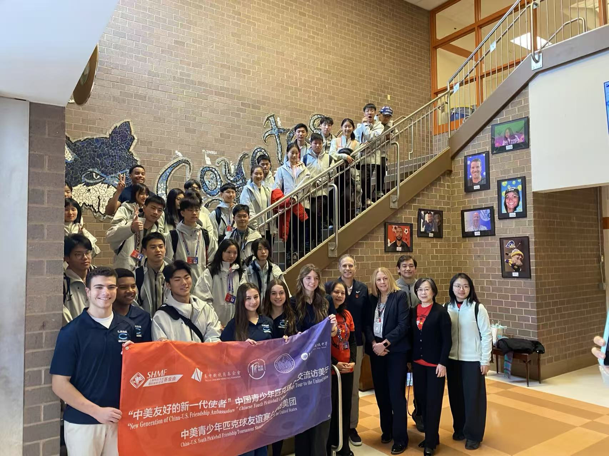
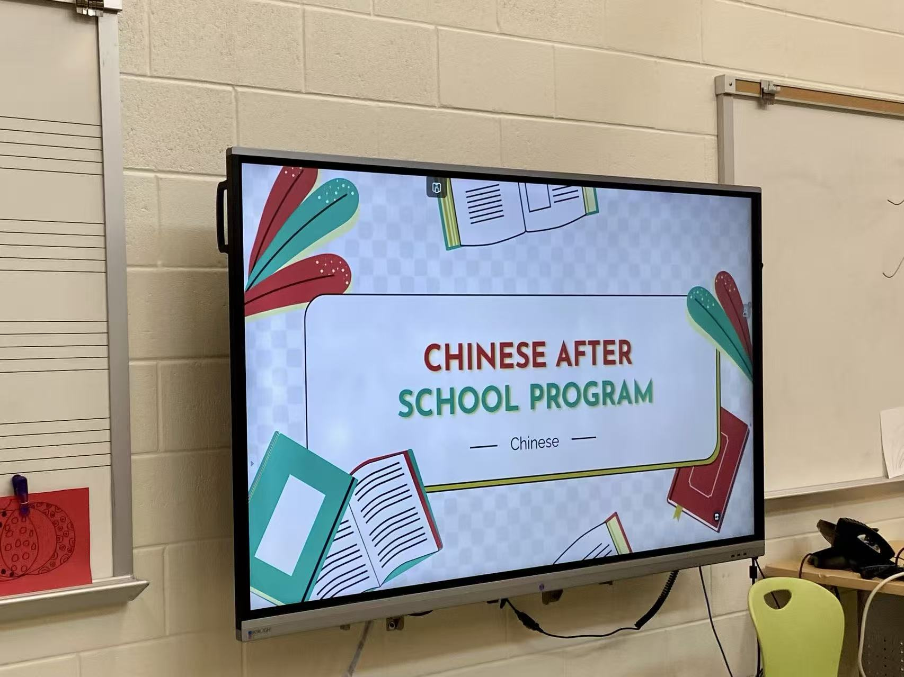
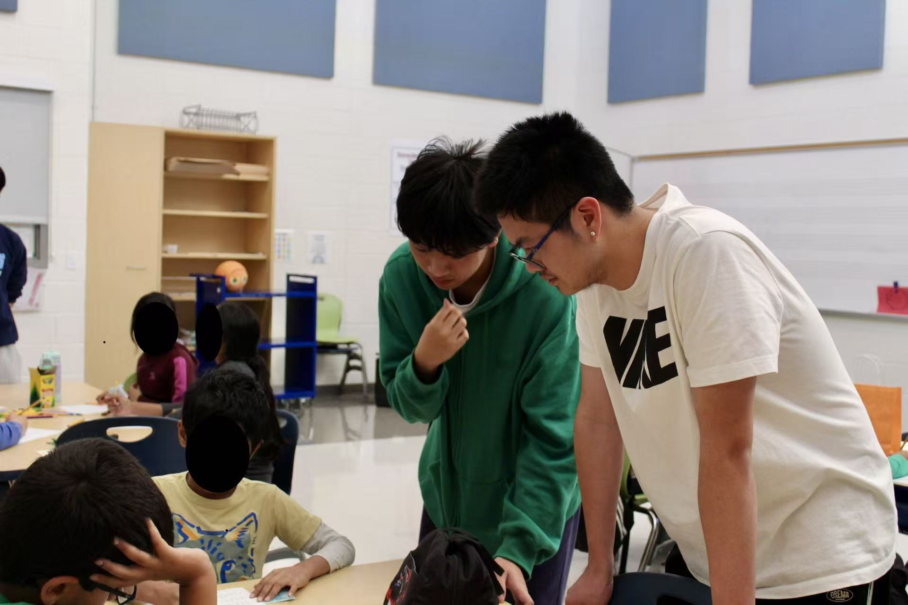

Support for Today, Success for Tomorrow.

Collaboration with Our Community
We are honored to have collaborated with Clarksburg High School Ambassadors to host a welcome ceremony for a delegation from Shanghai in February 2026. This event was a wonderful opportunity for our club to connect with our community and showcase the spirit of cultural exchange and mutual support that defines us. We are also dedicated to volunteering teaching and assisting in Chinese After School Program at SFES, which is a great way for us to give back to our community and share our culture with younger students. Through these activities, we have been able to foster meaningful connections with our community members and create a positive impact that extends beyond our club. We are grateful for the support and collaboration of our community, and we look forward to continuing to work together to create more impactful events and initiatives in the future.


Support Is Our Mission
APSC is committed to providing support and resources to our members and the wider community. Through our various events and initiatives, we strive to create a welcoming and inclusive environment where everyone can feel supported and empowered. Whether it's through our peer support activities, cultural events, or community collaborations, we are dedicated to making a positive impact and fostering a sense of belonging for all. We believe that by working together and supporting each other, we can create a stronger and more vibrant community that celebrates diversity and promotes mutual understanding.